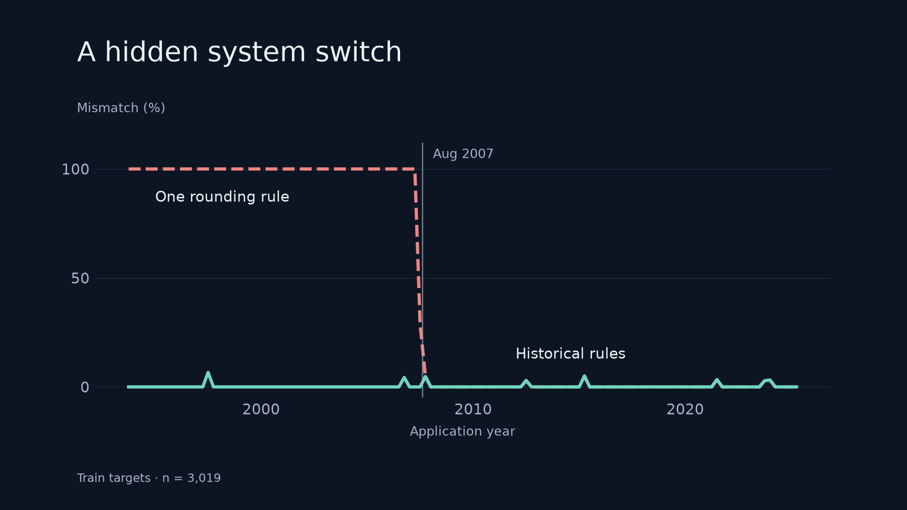
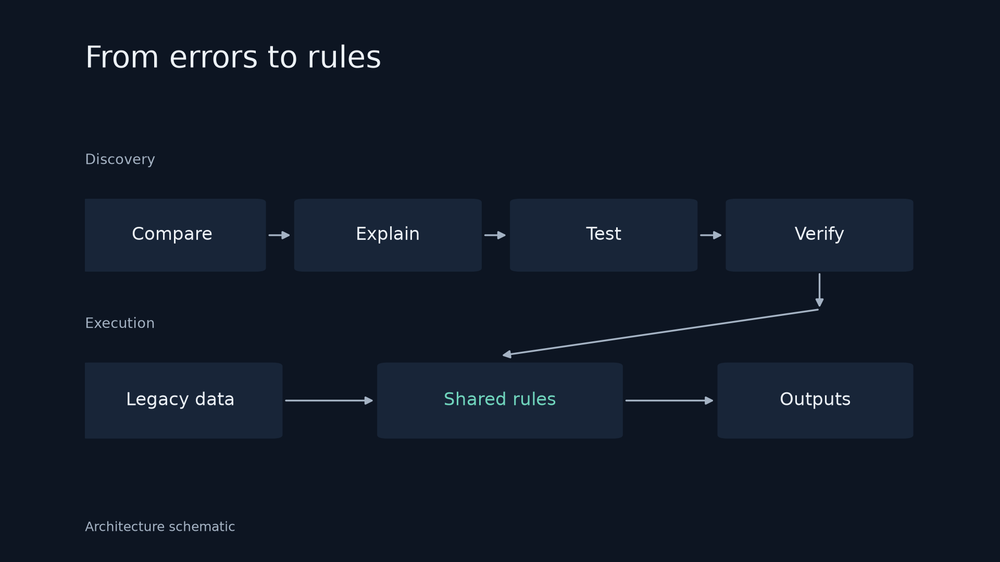
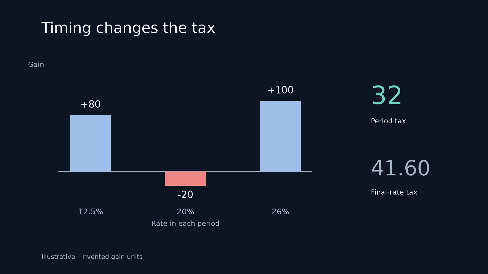
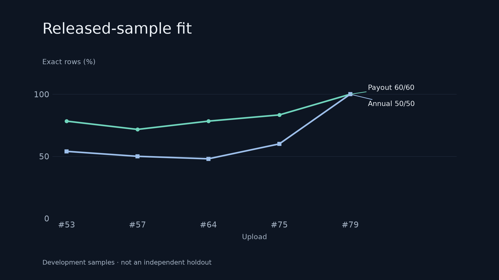

<!doctype html>
<html lang="en">
<meta charset="utf-8"><meta name="viewport" content="width=device-width,initial-scale=1">
<title>Neuron — visualisation</title>
<style>
*{box-sizing:border-box}body{margin:0;background:#0d1522;color:#edf2f7;font:15px/1.6 system-ui,sans-serif}main{max-width:1600px;margin:auto;padding:40px 4vw}header{display:flex;align-items:baseline;gap:24px;flex-wrap:wrap;margin-bottom:28px}h1{font-size:28px;font-weight:500;margin:0}a{color:#9dbfea;text-decoration:none}a:hover{text-decoration:underline}a:focus-visible{outline:2px solid #70d5bd;outline-offset:5px}.grid{display:grid;grid-template-columns:repeat(2,minmax(0,1fr));gap:36px 24px}img{display:block;width:100%;height:auto}.links{display:flex;gap:18px;flex-wrap:wrap;padding:4px 7% 0;font-size:13px}footer{margin-top:40px;color:#a5b3c4;font-size:13px}@media(max-width:850px){.grid{grid-template-columns:1fr}}
</style>
<main><header><h1>Neuron, visualised.</h1><a href="CAPTIONS.md">Captions &amp; sources</a><a href="README.md">Rebuild</a></header>
<div class="grid">
<section><a href="video/01-rounding-discovery.png"></a><div class="links"><a href="report/01-rounding-discovery.pdf">Report PDF</a><a href="report/01-rounding-discovery.svg">SVG</a><a href="video/01-rounding-discovery.png">Video image</a></div></section>
<section><a href="video/02-shared-engine.png"></a><div class="links"><a href="report/02-shared-engine.pdf">Report PDF</a><a href="report/02-shared-engine.svg">SVG</a><a href="video/02-shared-engine.png">Video image</a></div></section>
<section><a href="video/03-historical-tax-periods.png"></a><div class="links"><a href="report/03-historical-tax-periods.pdf">Report PDF</a><a href="report/03-historical-tax-periods.svg">SVG</a><a href="video/03-historical-tax-periods.png">Video image</a></div></section>
<section><a href="video/04-sample-evidence.png"></a><div class="links"><a href="report/04-sample-evidence.pdf">Report PDF</a><a href="report/04-sample-evidence.svg">SVG</a><a href="video/04-sample-evidence.png">Video image</a></div></section>
</div><footer>Report: light PDF/SVG/PNG. Video: dark 1920 × 1080. Interpretation and evidence limits are in the captions.</footer></main></html>
